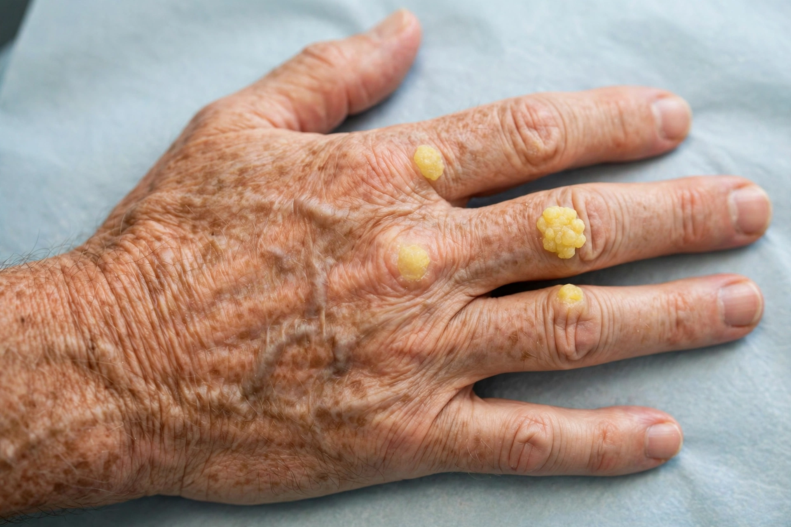

From Wikipedia, the free encyclopedia
| Familial hypercholesterolaemia | |
|---|---|
| Specialty | Medical genetics, cardiology |
| Gene | LDLR, APOB, PCSK9 |
| Inheritance | Autosomal dominant (usually) |
| Prevalence | ~1 in 250 (heterozygous) |
Familial hypercholesterolaemia (FH) is a genetic disorder characterised by high cholesterol levels, specifically very high levels of low-density lipoprotein (LDL cholesterol), in the blood and early cardiovascular disease. The mutations make the liver unable to remove LDL cholesterol from the blood.

Most FH is caused by mutations in the LDLR gene encoding the LDL receptor; others involve APOB (apolipoprotein B) or PCSK9. Inheritance is usually autosomal dominant. Homozygous FH is rare (~1 in 160,000–300,000) and much more severe.
Clinical features include tendon xanthomas, xanthelasma, corneal arcus, and premature coronary artery disease — heart attacks may occur as early as the teens or twenties in homozygous patients.
Diagnosis rests on markedly raised LDL cholesterol, family history of premature cardiovascular disease, physical signs, and genetic testing. The Simon Broome and Dutch Lipid Clinic criteria are commonly used.
High-intensity statins are first-line; ezetimibe, PCSK9 inhibitors and bile-acid sequestrants may be added. Homozygous FH may require lipoprotein apheresis. Family cascade screening is recommended.
See also: Hypercholesterolemia, Low-density lipoprotein.